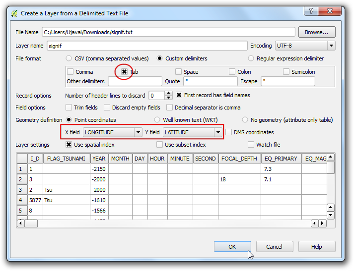
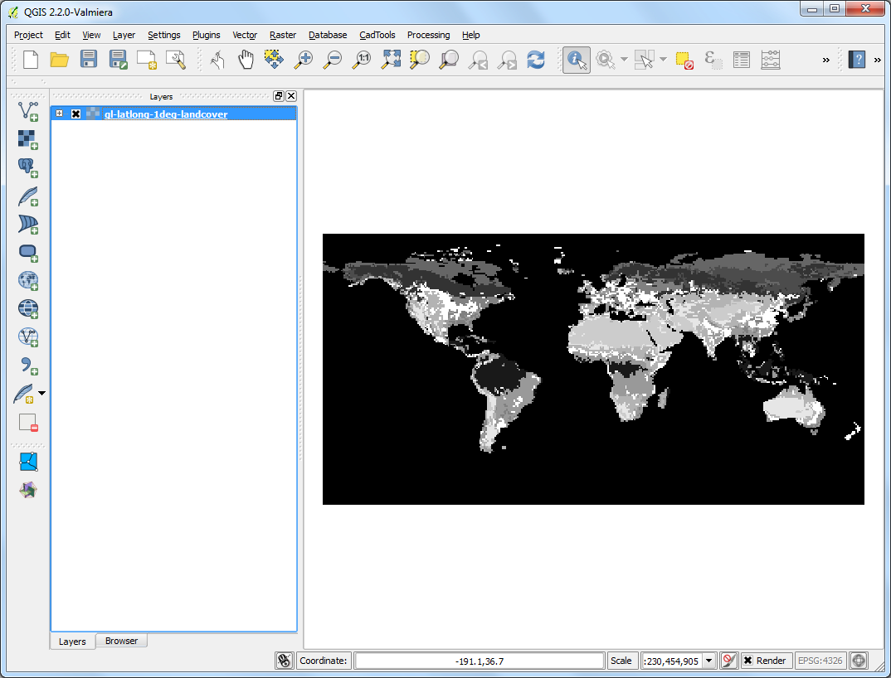
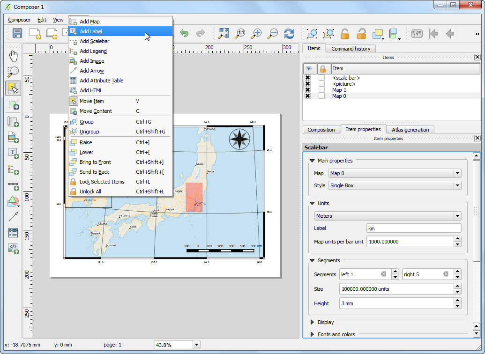
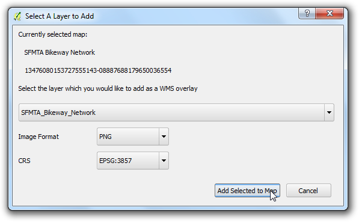

Создание карты
Часто бывает нужно создать карту, которая подходит для печати или публикации. У QGIS есть мощный инструмент под названием Print Composer, который позволяет вам брать ваши слои ГИС и упаковывать их для создания карты.
Обзор задачи
Этот урок показывает, как создать карту Японии со стандартными элементами карты, такими как карта-врезка, сетка, указатель севера, масштабная линейка и подписи.
Получение данных
Мы будем использовать набор данных Natural Earth, а именно, Natural Earth Quick Start Kit, который поставляется с красиво оформленными глобальными слоями, которые могут быть загружены непосредственно в QGIS.
Загрузите Natural Earth Quickstart Kit.
Источник данных: [NATURALEARTH]
Методика
Загрузите и извлеките данные Natural Earth Quick Start Kit. Откройте QGIS. Нажмите на .

Перейдите к директории, в которую вы извлекли данные Natural Earth. Вы должны увидеть файл с именем Natural_Earth_quick_start_for_QGIS.qgs. Это файл проекта, который содержит оформленные слои в формате документов QGIS. Нажмите Open.

Затем вы увидите список слоёв в таблице слева и стилизованную карту мира в рабочей области. При выводе сообщения об ошибке в верхней части рабочей области нажмите на крестик чтобы закрыть его.

В этом руководстве мы оформим карту Японии. Нажмите на кнопку Zoom In и нарисуйте прямоугольник для масштабирования этой области.

У вас есть возможность управлять видимостью слоёв для отображения только необходимой для текущей задачи информации. Снимите выделение со слоёв 10m_geography_marine_polys и 10m_admin_0_map_units при помощи флажков слева от них. Прежде чем начать подготовку карты к печати нужно выбрать подходящую проекцию. Наш набор данных дан в Geographic Coordinate System (GCS) единицами измерения которого являются градусы. Но такой вариант не подходит для карт где вы хотите дать масштаб в километрах или милях. Тогда мы должны перепроецировать карту в другую систему которая даст меньшие искажения связанные с формой земли и будет иметь подходящие единицы измерения - метры. Universal Transverse Mercator (UTM) будет неплохим выбором для нашей задачи. Эта система координат, помимо всего, является глобальной и подойдёт в большинстве случаев. Останется только выбрать подходящую зону UTM для минимизации искажений - дисторсии. В нашем случае мы используем зону 54N. Нажмите кнопку CRS Status расположенную в правом нижнем углу экрана.
Примечание
Для Японии создана координатная система под названием Japan Plane Rectangular CS ( часть системы CRS - coordinate reference system) которая даёт минимум искажений. Она разделена на 18 зон и её использование будет предпочтительнее если вы работаете с крупномасштабными картами.

Активируйте оцию Включить автоматическое перероецирование координат. Введите в строке поиска Tokyo utm zone 54n. Когда появятся результаты, выберите Tokyo / UTM Zone 54N - EPSG:3095. Нажмите Применить.

Теперь мы можем начать компоновать нашу карту. Перейдите по пути .

Вам будет предложено ввести имя макета. Можно оставить поле пустым для автоматической генерации имени. Нажмите Ok.
Примечание
Если поле осталось пустым то макету будет назван Макет 1

- In the Print Composer window, click on Zoom full to display the
full extent of the Layout. Now we would have to bring the map view that we
see in the QGIS Canvas to the composer. Go to .

- Once the Add Map button is active, hold the left mouse button
and drag a rectangle where you want to insert the map.

- You will see that the rectangle window will be rendered with the map from
the main QGIS canvas. The rendered map may not be covering the full extent
of our interest area. Select
to pan the map in the window and center it in the composer.

- Let us adjust the zoom level for the given map. Click on the
Item Properties tab and enter 7000000 for Scale
value.

- Now we will add a map inset that shows a zoomed in view for the Tokyo area.
Before we make any changes to the layers in the main QGIS window, check
the Lock layers for map item and Lock layer styles
for map item boxes. This will ensure that if we turn off some layers or
change their styles, this view will not change.

- Switch to the main QGIS window. Use the Zoom In button to zoom
to the area around Tokyo.

- There are some duplicate labels coming from the
ne_10m_populated_places
layer. You can turn it off for this view.

- We are now ready to add the map inset. Switch the the Print
Composer window. Go to .

- Drag a rectangle at the place where you want to add the map inset. You will
now notice that we have 2 map objects in the Print Composer. When making
changes, make sure you have the correct map selected. Select the
Map 1
object that we just added from the Items panel. Select the
Item properties tab. Scroll down to the Frame panel
and check the box next to it. You can change the color and thickness of the
frame border so it is easy to distinguish against the map background.

- One neat feature of the Print Composer is that it can automatically
highlight the area from the main map which is represented in our inset.
Select the
Map 0 object from the Items panel. In the
Item properties tab, scroll down to the Overviews
section. Click the Add a new overview button.

- Select
Map 1 as the Map Frame. What this is telling the
Print Composer is that it must highlight our current object Map 0 with
the extent of the map shown in the Map 1 object.

- Now that we have the map inset ready, we will add a grid and zebra border
to the main map. Select the
Map 0 object from the Items
panel. In the Item properties tab, scroll down to the
Grids section. Click the Add a new grid button.

- By default, the grid lines use the same units and projections as the
currently selected map projections. However, it is more common and useful
to display grid lines in degrees. We can select a different CRS for the
grid. Click on the change... button next to CRS.

- In the Coordinate Reference System Selector dialog, enter
4326 in the Filter box. From the results, select the
WGS84 EPSG:4326 as the CRS. Click OK.

- Select the Interval values as
5 degrees in both
X and Y direction. You can adjust the
Offset to change where the grid lines appear.

- Scroll down to the Grid frame section and select a frame style
that suits your taste. Also check the Draw coordinates box.

- Adjust the Distance to map frame till the coordinates are
legible. Change the Coordinate precision to
1 so the
coordinates are displayed only upto the first decimal.

- Now we will add a North Arrow to the map. The Print Composer comes with a
nice collection of map-related images - including many types of North
Arrows. Click .

- Holding your left mouse button, draw a rectangle on the top-right corner of
the map canvas. On the right-hand panel, click on the Item
Properties tab and expand the Search directories section and
select the North Arrow image of your liking.

- Now we will add a scale bar. Click on .

- Click on the layout where you want the scalebar to appear. In the
Item Properties tab, make sure you have chosen the correct map
element for which to display the scalebar. Choose the Style that fit your
requirement. In the Segments panel, you can adjust the number
of segments and their size.

- It is time to label our map. Click on .

- Click on the map and draw a box where the label should be. In the
Item Properties tab, expand the Label section and
enter the text as shown below. We can enter the text as HTML as well.
Check the box Render as Html so the composer will interpret the
HTML tags.
<div align=center>
<h1>Map of Japan</h1>
</div>

- Similarly add another label to add the data and software credits.

- Once you are satisfied with the map, you can export it as Image, PDF or
SVG. For this tutorial, let’s export it as an image. Click
.

- Save the image in the format of your liking. Below is the exported PNG
image.